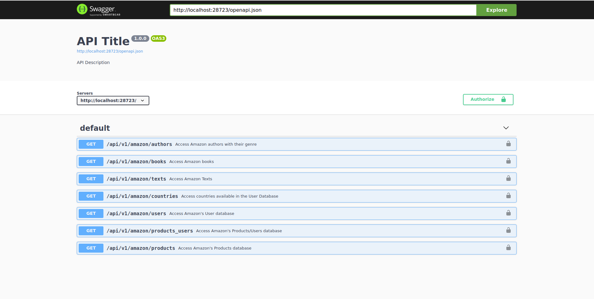
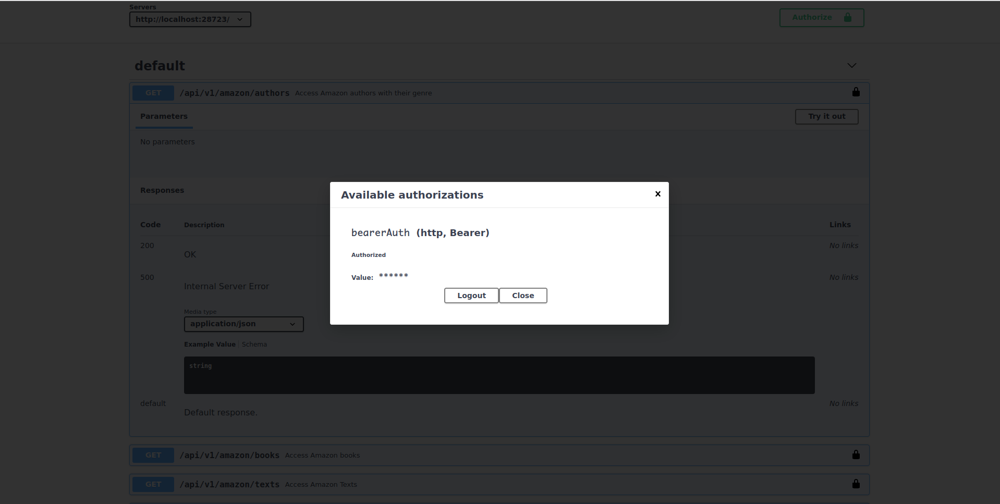
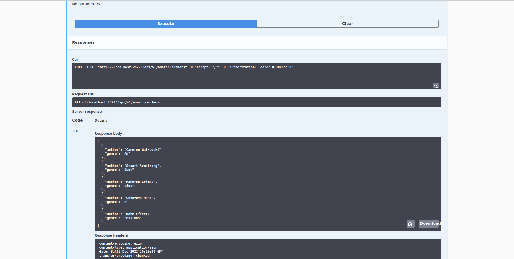
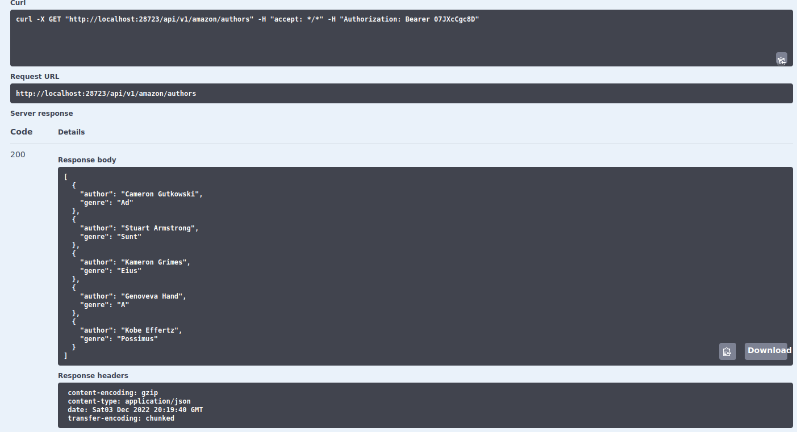
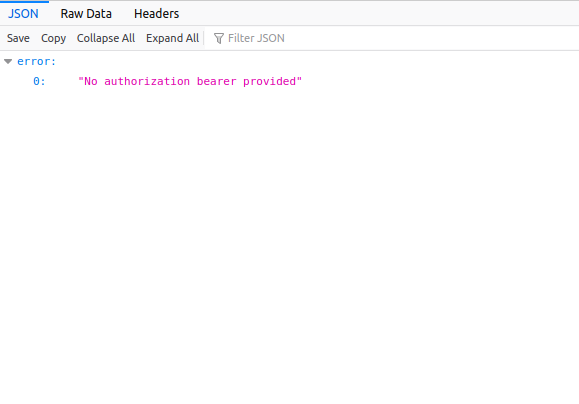

library(scrapex)
res <- api_amazon()10 Introduction to REST APIs
So far in the book we’ve covered the subtle art of web scraping. This art is weird in the sense that it’s not structured. To scrape some stuff you have to come up with unusual tricks to gather data from websites. You also have to be careful not to do it too often because it might impact the latency of the website due too excessive requests. Moreover, when you do gather the data, you need to apply some ninja-style tricks to clean the results. Overall, a complicated process because this data (on the website) is not meant for you to scrape it.
If it were for websites, they would love to prevent scrapers from scraping their website: in nearly all cases, that will bring negative impact to their website either through excessive requests and a possible slow down of their internal servers to reusing their data for your own economic benefit.
All of these steps start to hint towards a unilateral effort from the web scraper. You as the scrape master are the only one interested in doing this and that’s why the effort of scraping seems more like traveling through a jungle of obstacles rather than a walk in the park.
This is when REST APIs come in. As web scraping is somewhat like an ambush to a website, REST APIs are more of a two party contract. REST Application Programming Interfaces (API) are just a fancy name for a more structured way for users to gather data from the internal servers of the website (as they would do in web scraping) but in a controlled environment where the user agrees to rules that don’t affect negatively the data or the performance of the servers of the company.
Users should be careful distinguishing between APIs and REST APIs. APIs are the interface of any program: for example, for the package dplyr, the way decisions where taken on how each function accepts arguments, which functions are exported, how these functions interact with each other so on (the general design of how the package works) is called the API of a package, or the programming interface. In contrast, a REST API is a data transfer design for users to share data over the internet. In this chapter we’ll be discussing exclusively REST APIs.
REST APIs are a natural answer for companies once they figured out web scraping was affecting their business negatively. Companies decided to create a custom ‘portal’ where a user, after authenticating and accepting the agreements of using this ‘portal’, can access much of the data they can see on a companies website (but not necessarily what you’re looking for, it is their prerogative). However, this ‘portal’ is not a website where you can go in and download the data through drop down menus and clicking buttons: it’s a series of URLs that you will need to consult programmatically.
So you might ask yourself, well, how do we access a REST API? Can you show me one? Yes! The scrapex package contains several REST APIs designed specifically for educational purposes in the this book. First, let’s launch the REST API locally:
[1] "Visit your REST API at http://localhost:28723"
[1] "Documentation is at http://localhost:28723/__docs__/"Do you see the print out with the local URL to the __docs__ of the REST API? This my local URL. This won’t work on your computer, so don’t try to go to that website: you’ll get that the URL doesn’t exit. You need to install the scrapex package and run the api_amazon() function, copy your local API path onto your web browser and then you’ll see the same thing as I do.
Since the philosophy of the scrapex package is to create both websites and REST APIs that can be reproduced in the long term, the REST APIs you’ll see in this book are fake. This means they contain made up data and are deployed locally in your computer behind the scenes.
In the real world, you’ll go to the website of a company and search for their API documentation (for example, google “Spotify Web API” and you’ll be directed to the documentation of Spotify’s REST API). Browsing the documentation or looking at online tutorials you’ll be able to figure out how their API works, what data they share and how to authenticate. Just beware that the previous step of calling api_amazon is something that you won’t need to do when accessing APIs of companies; this is just our way of deploying our locally developed APIs on your computer to make the examples in this book as real as possible.
The REST API for this example is a fake database of Amazon’s books / users / products database. This means that we can access all sorts of information on the books that Amazon has on their catalogue together with their author’s details, the users that read those books and other products that these users bought on their platform. Let’s go explore it.
I’ll assume that you ran your part of loading scrapex and ran the api_amazon function. That should return your local version of the URL http://localhost:28723/__docs__/ with a different number for the part 28723. Let’s paste that URL in our browser and you should see this:

This is the documentation of the API. Normally, company APIs will have something like this on their website (it will be different but the gist of the content will be very similar). You can see the different endpoints with their description. The first one, for example, is named /api/v1/amazon/authors. The base path of the API is http://localhost:28723 and each endpoint is a different URL from that website that will return different types of data.
Let’s check out the data in the authors endpoint. We can usually try this API endpoint directly in the documentation to get a grasp of how it works. Let’s click on this endpoint and see what’s inside:

Here we can see several things from this endpoint:
It does not need any parameters. Endpoints often need parameters to filter data. For example, say you were requesting all the books from an author. Probably the endpoint would need to specify the author from which to return data from. This endpoint returns all available authors in the Amazon Book Store so it does not need any parameters. In other endpoints in this REST API you’ll see that you will need to specify parameters.
It allows you to try out this endpoint with a button that says
"Try it out".REST APIs have codes that signal the status of your request. Below
Responses, it says that this endpoint has two codes:200which means that everything is OK and500which means that something wrong happened when you requested data. Note that whenever you request data, one of these codes will be returned. If everything was alright,200will be return together with the data that you wanted. If something went wrong, the code500will be returned. Note that these are the possible values that it can return, not what is currently being returned: remember that we haven’t made yet a request.Right below
Media type, we can figure out the formats that this endpoint returns. It says this endpoint returns aJSONstring, a typical format used for sharing data over the web (we’ll talk about the JSON format in chapter @ref(json-chapter)).
Finally, and this is irrespective of any particular endpoint, many REST APIs require that you authenticate before requesting any data. Normally, you’ll need to follow the instructions for authenticating for the REST API you’re after and in return they’ll give you some sort of token.
As this is a fake REST API from Amazon, you can use the code CctltpliQk to authenticate. To do this, click on the top right button Authorize, input that token, click on authorize and close the window:

With that out of the way, click on “Try it out” and then on the button “Execute” to perform an example request of data from this endpoint:

Alright, so right now we performed a request to the /api/v1/amazon/authors endpoint. Let’s discuss what happened:

Behind the scenes, we joined the base path of the REST API (http://localhost:28723) with the authors endpoint (/api/v1/amazon/authors) to get the path http://localhost:28723/api/v1/amazon/authors. You can see this path under Request URL in the image above. That’s the complete URL that returns the data for authors. Try copying your URL of that endpoint (remember that it has a different port number in the website) and pasting it on a website:

It says we didn’t provide a token and that’s correct. The long explanation on how to provide a token in a browser is too tedious so the short explanation is that REST APIs are not meant to be used constantly through a browser. They’re aimed at being used programmatically and that’s how we’ll use APIs in the next chapters. For now, we’ll continue to make requests in the user interface of the __docs__ website.
Going back to the results of the request, let’s explain the actual data that it returned:
Under Server response you’ll see that this request returned a 200 code as the response. This means that the request of data was successful and all was good. The Response body contains the actual results. Here we can see that the Amazon database has five authors and each author has only written in one genre. The way the data is organized is a JSON. Later on we’ll see how to read this into a data frame in R.
Finally, the response also contains other stuff, aside from the data. This is important for REST APIs. When making a request to an endpoint, REST APIs accept something called Headers. Let’s reason about this with an analogy using an R list:
$endpoint
[1] "http://localhost:28723/api/v1/amazon/authors"
$headers
Authorization accept
"Bearer bRKlzSNd7x" "application/json" When you make a request, you have something like the list above. You make a request to that endpoint but you also add somewhat like an attachment that has extra information. This is the headers. Some APIs might require you to specify certain parameters in the headers or they might be optional with default values. For many APIs this header must contain the authentication token that you got from the website for using their REST API.
In this analogy, you see that that we specify the authorization token in the headers as well as that it must accept only data structured in JSON format. Similarly, when you perform a request to an endpoint, the resulting response will also contain a headers attachment with information. Following on our analogy using an R list, the response might look something like this:
$status_code
[1] 200
$response_headers
content-encoding content-type
"gzip" "application/json"
date transfer-encoding
"Sun04 Dec 2022 12:28:38 GMT" "chunked"
$response_body
$response_body[[1]]
author genre
"Cameron Gutkowski" "Ad"
$response_body[[2]]
author genre
"Stuart Armstrong" "Sunt"
$response_body[[3]]
author genre
"Kameron Grimes" "Eius"
$response_body[[4]]
author genre
"Genoveva Hand" "A"
$response_body[[5]]
author genre
"Kobe Effertz" "Possimus" This list has three slots: status_code, response_headers and response_body. The first two are somewhat like attachments containing information while the third contains the most important part of the request: the data. The response headers (as contrary to the headers you submitted when you did the hypothetical request) has extra information such as the encoding of the response, the date and the transfer encoding. In any case, you won’t be paying too much attention to the response headers. Instead you’ll be submitting headers in the request and look at the status_code to make sure that your request was successfully. If not, then you’ll want to look into which status code was returned and look up on the internet the source of the error.
Coming back to our authors example, you can see see that all the information we saw in the R list analogy is in the user interface of the example request:
And that’s pretty much it for the very basics. You performed your first API request and learned the basics of what to expect as input and return values of an API response.
10.1 Summary
REST APIs have a base path. Normally that’s something like
https://api.spotify.com/v1/.REST APIs are structured around endpoints. These are specific URLs that return different types of data. For example
https://api.spotify.com/v1/artistsis an endpoint related to artist data whilehttps://api.spotify.com/v1/tracksreturns data related to tracks.Endpoints might not or might have parameters to filter data.
The docs of the REST API documents what each endpoint does and which parameters are needed to use to query data.
Many REST APIs need authentication tokens for making requests.
REST APIs response always return status codes and headers describing whether the request was successful or something went bad.
10.2 Exercises
Using the same interface we used in this chapter for making requests, can you make a request to the
countriesendpoint and tell me if the countryVenezuelais in the Amazon country list?Using the
users/endpoint, can you tell me how many Amazon users are in China?Can you breakdown the
Request URLthat you performed in the previous exercises? That is, what do you see differently in a request that needs parameters in contrast to the requests we did to theauthorsendpoint?Using the
users/endpoint again, make request using both a customer id (use2131) and a country (Chinais fine). What status code do you get? What does the response body says? Can you do anything to fix it? Look on the web for the status code.